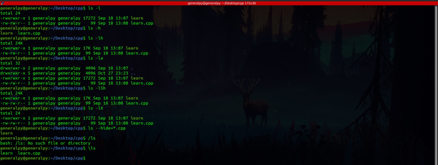

ls which is used to list a directory is a very extensive command with many options. Some of the options are listed below.
-l stands for long listing which shows a lot of informations about the directory contents.
-a is used to show all everything present on the given path even if it is a hidden file(beginning with .).
-h is used to show sizes in human readable formats.
-S is used to sort directory contents using according to size descending(larger stuff first).
-X is used to sort contents by extension.
--hide is used to hide certain files in listing.It takes a argument which is the file(s) name to hide.Usually a wildcard file name is used like ls --hide=*.conf.
-R lists directories recursively which is the ls walks through all directory tree below the directory passed to ls i.e ls will list contents of subdirectories too.
\ removes any aliases. Eg, ls we use on Ubuntu is alias for command ls --color=auto which helps to color results of ls appropriately according to item type. To use pure ls use \ls.
The file size shown in ls for directories is not correct as it is file size of the inode(as directories are also special files). To see true size of a directory use du(disk usage) command.
